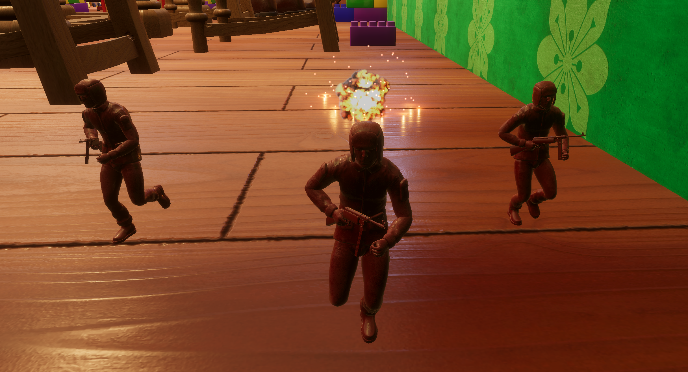
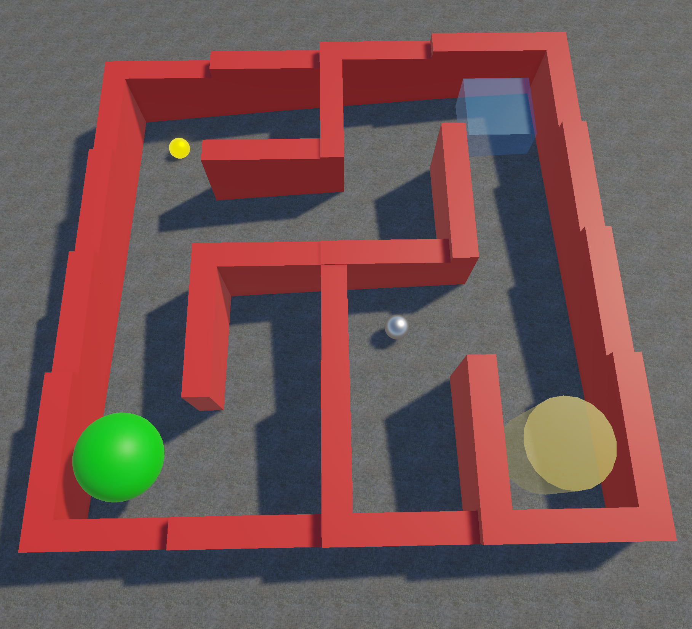
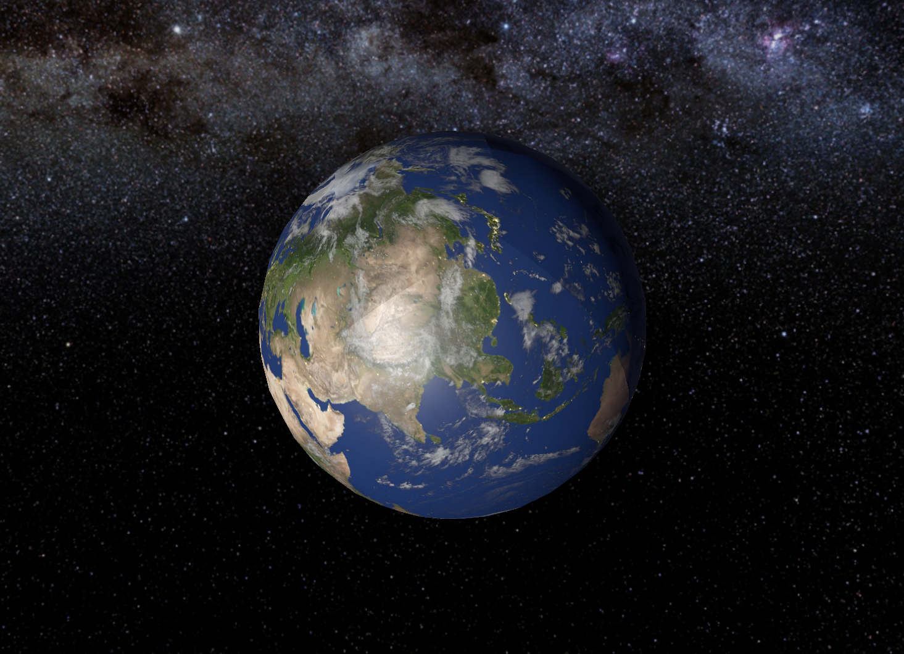

I am a Computer Games Technology student with a focus on gameplay programming, AI systems, and game mechanics development using Unity and C#.

Developed a vertical slice sandbox shooter for Rebellion as part of a 16-person multidisciplinary team. As an AI Programmer, I designed and implemented enemy behaviours including perception systems, cover mechanics, squad coordination, and finite state machine-driven decision making using Unity and C#.

Developed an AI system using Unity’s ML-Agents toolkit to explore how reinforcement learning agents adapt within procedurally generated environments. The project implemented a deep reinforcement learning approach to train agents within dynamically generated 3D maze environments.
The agent was trained to complete multiple task types including navigation to target locations, waiting within designated zones, and pickup-and-delivery objectives. A procedural generation system was used to create varying maze layouts, enabling evaluation of generalisation and adaptability.
Performance was evaluated by comparing a trained agent operating in fixed environments against one trained within procedural environments. Results demonstrated that while the fixed agent performed well in familiar layouts, the procedural-trained agent achieved significantly higher success rates in unpredictable environments, indicating improved generalisation.

Developed a real-time 3D solar system simulation in Unity focused on implementing core mathematical systems for object movement, camera control, and spatial transformations within a dynamic environment.
Implemented vector-based orbital motion to simulate planetary movement in 3D space, alongside matrix-based transformation logic for scaling, rotation, and translation of objects in the scene.
Used Euler angles for initial camera control, later transitioning to quaternions to resolve gimbal lock and improve rotational stability. Developed interpolation techniques to smooth camera movement between targets and improve overall motion flow.
This project demonstrates practical application of core game mathematics, including vectors, matrices, quaternions, and interpolation, within a real-time simulation system.